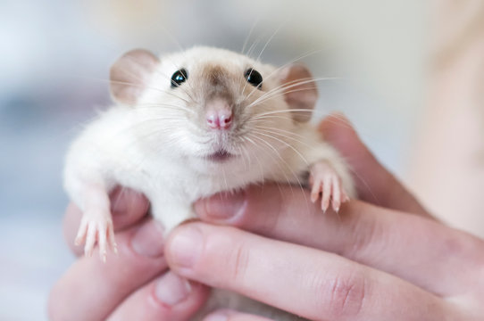
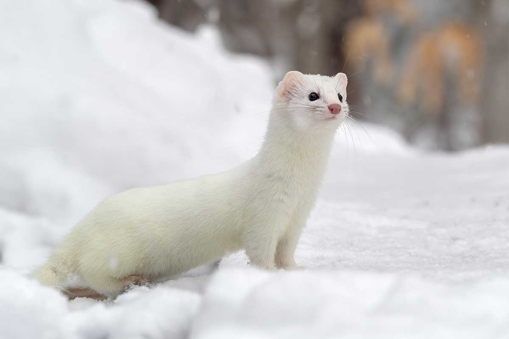
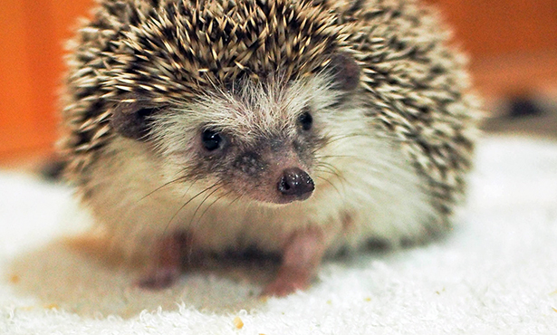
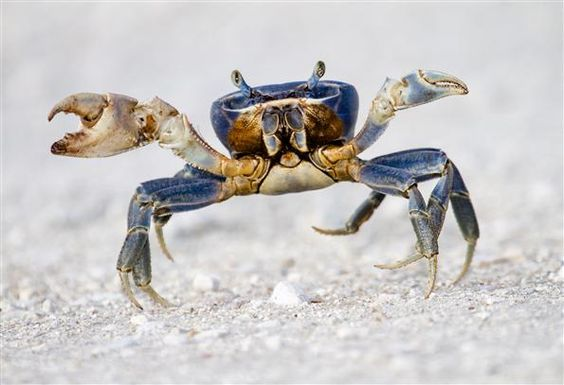
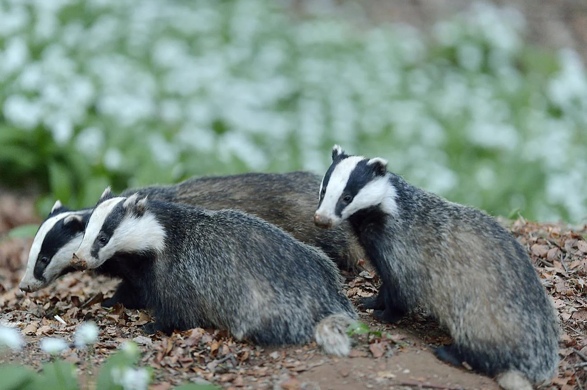
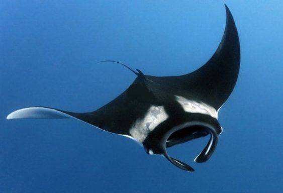
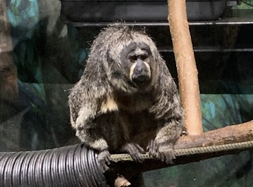
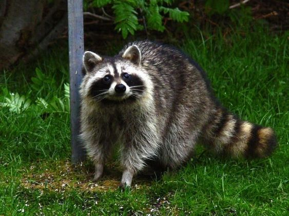

animals
the following is a gallery of the superior animals according to me
rat
i love rats. they are so cute. look at their little hands. i want to put him in my pocket and take
him on the bus with me. domesticated rats are called fancy rats. i think this is a very good name
because they are clearly quite distinguished friends. you can tell rats apart from mice because they
are much larger and have especially long noodle tails.
a well known reference to rats in pop
culture is the chicago rat hole. basically it's a
hole shaped like a rat and it's in chicago and
several people have been married at it. various offerings have been made to the chicago rat hole
including, most notably, estradiol pills which are used to treat menopause. the hole was temporarily
filled in by an inferior member of society, much to people's outrage. various locals attempted to
dig out the hole until one lady was successful in doing so.
i have encountered one rat in my
life. it was roaming the streets of toronto. i would have attempted to befriend it had it not run
away. i would argue that this sighting was the highlight of my trip.

rat
ermine
this is an ermine. it's like a weasel but better. it's very small and cute. i'd let him live in my
garden. it normally has a brown coat but it becomes white in the winter. never challenge an ermine
in a race. it will beat you and then you will feel bad because you lost to an ermine.
they're actually pretty aggressive and eat rabbits and other animals that are way bigger than them.
they were actually brought to new zealand in the 19th century to control the rabbit population but
then they kinda wiped out part of the bird population instead.
people kill ermines for their pelts to make coats and hats out of but that's not cool.

ermine
hedgehog
hedhgeongs are very cute and nice. it is rumoured that they were inspired by the hit video game
franchise 'Sonic The Hedgehog'. Though experts argue that this is false as wild hedgehogs are brown
in colour unlike sonic who is blue. hedgehogs are sadly threatened by european badgers who i also
love dearly. why they cannot simply coexist in peace, we will never know.
hedgehogs are
known for their built-in defense mechanism, their spiny exterior. they are only spiky to touch when
they feel threatened and choose to roll up into a protective ball. otherwise they are perfectly
strokeable. many people actually keep hedgehogs as pets, and they are legal here in ontario too.
it is worth mentioning that hedgehogs are not porcupines. porcupines are much larger and
stranger looking. the word for porcupine in my native language translates to prickly swine. why am i
mentioning this? i'm not talking about porcupines. forget i said anything.

hedgehog
crab
i've chosen to include just crabs as a whole species because i think they are a cool concept.
specifically i think it's funny how they just kind of scuttle around. i don't know what goal they
are really trying to achieve in life. they are just there.
there are a lot of different
kinds of crabs. hermit crabs are nice because they outshine humans in being able to bring home with
them wherever they go. and they just look silly. i also like japanese spider crabs. people hate them
because they're scary and massive. i just think they're goofy. they have far too much leg to be able
to control. the japanese name literally translates to "tall legs crab". i think that would be me if
i were a crab.
i get a certain vibe from crabs that suggests they want to fight all the
time. i think it's how they tend to have their pincers out. it looks like they're ready to throw
hands. i don't think i could beat a crab in a fight.

crab
badger
badgers are friends. though i should specify, there is a world of difference between american and
european badgers. the image here depicts european badgers. they are innocent creatures who can do no
wrong. american badgers, on the other hand, are evil. we do not like them. that is all.
they are very sophisticated individuals. they clean their burrows meticulously and choose
locations away from their homes to use the toilet. i agree with badgers in their choice to skip
winter entirely by comfortably hibernating in their burrows. badgers make a wide variety of noises
that are described rather amusingly as "kekkering" and "whickering". i think those might just be
towns in england.
my profile picture on discord is a badger and it often gets mistaken for a
raccoon which is troubling. i mean raccoons are also good and i'm including them in this list too
but ITS A BADGER NOT A RACCOON OKAY rant over.

badger
manta ray
manta rays are very cool and chill and we love them. they are the friendly version of stingrays as
they do not hurt people they just kind of wobble around and live life. they are a whole seven meters
long meaning that they are the perfect sea blanket and super comfy.
people call manta rays
devilfish because they have fins that look like horns but they are not devils!!!! they are very nice
and gentle and can be trusted around small children. they do weigh about as much as a car though so
maybe they're more of a (heavily) weighted blanket... they do have accordingly massive brains as
well. i think they could probably cure cancer if they tried. i propose a human-manta ray alliance
for the benefit of both races.

manta ray
white-faced saki
this thing is a monkey called the white faced saki. i took this picture at the toronto zoo. prior to
seeing it i knew nothing about this animal and i still don't. i was merely drawn to the air it gave
off of simply being so incredibly discontent with its state.
they have really long and
bushy tails which you can't see because i cropped it out of the picture but it definitely adds to
their character. the reason they are called white faced is because the males have white fur all
around their faces (the one in the image is female). i think we will never achieve gender equality
as a people if we cannot even do so in the naming of monkey species.

white-faced saki
raccoon
raccoooooooooon! the one in this image looks especially polite. personally i respect raccoons. they
are not picky with their food and they had something of a monopoly over the rideau street mcdonalds
at one point.
they are also impressively smart. there was an experiment where some raccoons
were tasked to try and open locks and they succeeded with nearly all of them. this is unsurprising,
as
how else would they be getting into my trash. some people also keep raccoons as pets though sadly,
it is illegal here in canada. an injured raccoon once appeared on my patio doorstep and i absolutely
would have taken him in if i could. he just kind of vanished though.
I once looked out my
window to the sight of a raccoon wandering around atop my neighbour's roof.
I don't know how it got up there. I named it Harold.
